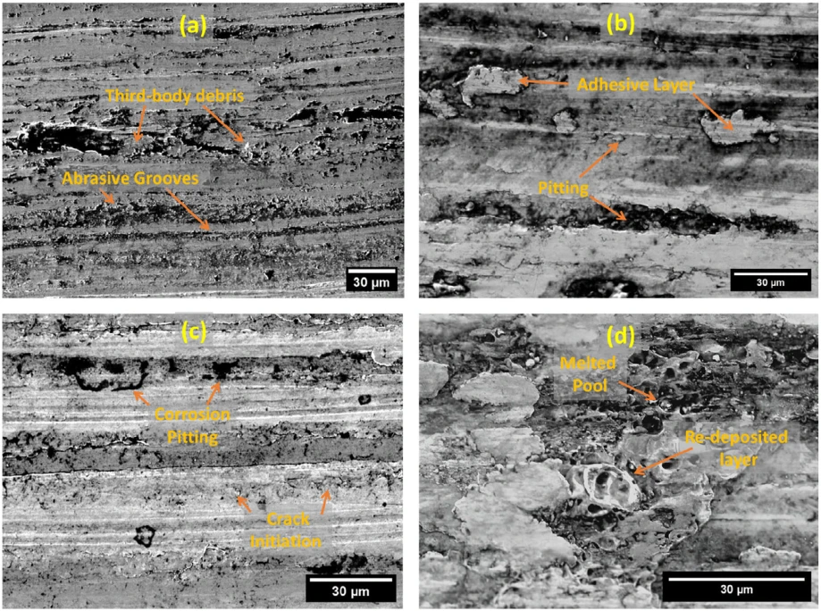

~45%
lower wear with carbon additives
CNP-modified greases reduced wear by up to approximately 45% at 3 A versus their corresponding base greases. Lower bulk impedance coexisted with higher sliding-contact resistance.
Read the paperElectrified interfaces
Understanding and mitigating wear when electrical current passes through lubricated contacts.
I investigate grease-lubricated contacts under combined mechanical and electrical loading. Studies of lithium-, calcium- and aluminum-based greases connect friction and wear with adhesion, bulk impedance, sliding-contact resistance and nanoparticle concentration.
THE RESEARCH QUESTIONHow do lubricant chemistry and electrical transport alter the damage produced at a sliding interface?

SELECTED OUTCOMES
CNP-modified greases reduced wear by up to approximately 45% at 3 A versus their corresponding base greases. Lower bulk impedance coexisted with higher sliding-contact resistance.
Read the paperMoS2 additives in lithium grease reduced wear by 93% at 40 °C and 3 A relative to base grease; the reported reduction at 80 °C was 85%.
Read the paperAt 1 A, 1 wt.% CNPs reduced measured pitting density from 9.4% to 2.5%. Higher-current behavior differed, demonstrating a concentration–current trade-off.
Read the paperElectrical conductivity is not a stand-alone predictor of protection. The carbon nano-onion study identifies a concentration-dependent trade-off, while the comparative grease study links load, adhesion and electrical response with wear. My first-author Editor’s Choice Perspective proposes a multiscale electrified-damage framework connecting electrical transport, mechanical contact and interfacial chemistry.
THE EVIDENCE
Advanced Materials Interfaces
ACS Applied Engineering Materials
Wear
Advanced Engineering Materials
GET IN TOUCH
Research collaborations and professional inquiries.